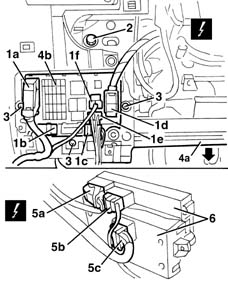
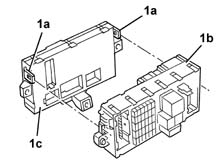

5505A35 BODY COMPUTER/MAIN JUNCTION UNIT - R.R.
- Path
- Procedures > 55 ELECTRICAL EQUIPMENT > 5505 ELECTRICAL CIRCUIT FOR INSTRUMENTS/INDICATORS > 5505A multi-function components > 5505A35 BODY COMPUTER/MAIN JUNCTION UNIT - R.R.
- Kind
- repair procedure (removal / refitting; the operation number is the code)
- Applies to
- all engines; all production periods
- Interactive page
- https://sloeber94.github.io/elrnDB-lYpsln/en/#/2429366
Applies to: all engines; all production periods
 Removing
Removing
 Refitting
Refitting7040A30 Left instrument panel lower TRIM - R.R.
1. Disconnect the electrical connections (1a, 1b, 1c, 1d, 1e, 1f).
 | Name | Connector |
|---|---|---|
1a | Junction unit under dashboard |
| Name | Connector |
|---|---|---|
1b | Body computer |
| Name | Connector |
|---|---|---|
1b | Body computer |
| Name | Connector |
|---|---|---|
1c | Body computer |
| Name | Connector |
|---|---|---|
1c | Body computer |
| Name | Connector |
|---|---|---|
1d | Junction unit under dashboard |
| Name | Connector |
|---|---|---|
1e | Junction unit under dashboard |
| Name | Connector |
|---|---|---|
1f | Junction unit under dashboard |
2. Undo the left-threaded bolt securing the facia trim mount beam.
3. Undo the bolts securing the body computer/junction unit.
4. Move facia trim (4a) slightly and move body computer/junction unit (4b) downwards.
5. Disconnect the electrical connections (5a, 5b, 5c).
| Name | Connector |
|---|---|---|
5a | Junction unit under dashboard |
| Name | Connector |
|---|---|---|
5b | Junction unit under dashboard |
| Name | Connector |
|---|---|---|
5c | Body computer |
| Name | Connector |
|---|---|---|
5c | Body computer |
| Name | Connector |
|---|---|---|
5c | Body computer |
6. Recover the body computer/junction unit.

Applies to: all engines; all production periods
1. Release the retainers (1a) , separate the junction unit (1b) from the body computer (1c).

Applies to: all engines; all production periods
Refitting
RemovingCheck the junction unit and body computer are undamaged.
At the bench, connect the junction unit from the body computer and attach the retainers.
Connect the rear electrical connections.
Position the unit and secure it using the bolts
Connect the front electrical connections.
Move the facia to the correct position and tighten the left facia beam bolt.
 | Fastening | Component | Ø | Value (daNm) |
|---|---|---|---|---|
- | Bolt | FACIA TRIMMOUNT BEAM | M12 x 1.25 | 4.0 |
7040A30 Left instrument panel lower TRIM - R.R.
If the body computer is being replaced, proceed as follows:
If the same body computer that was removed is being refitted on the vehicle, check that the system has not picked up any errors during the operation using the Examiner.
Test the electrical system.
Topics linked from this page (14)
- 7040A30 Left instrument panel lower TRIM - R.R.
- B2A Junction unit under dashboard ( FRONT )
- B2B Junction unit under dashboard ( REAR )
- B2C Junction unit under dashboard ( FRONT )
- B2D Junction unit under dashboard ( REAR )
- B2F Junction unit under dashboard ( FACIA )
- B2H Junction unit under dashboard ( FACIA )
- M1A Body computer ( FRONT )
- M1B Body computer ( FRONT )
- M1D Body computer ( REAR )
- M1E Body computer ( REAR )
- M1G Body computer ( FACIA )
- M1H Body computer ( FACIA )
- M1I Body computer ( FACIA )